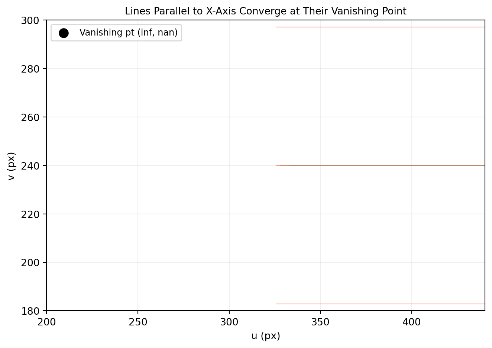

import numpy as np
import matplotlib.pyplot as plt
# Camera: identity extrinsic, f=400, principal point (320,240)
K = np.array([[400., 0., 320.],
[ 0.,400., 240.],
[ 0., 0., 1.]]) # shape (3, 3)
def project(pts_3d, K):
"""Project (N,3) points with intrinsic K. Returns (N,2) pixels."""
p_h = (K @ pts_3d.T).T # shape (N, 3)
return p_h[:, :2] / p_h[:, 2:3] # shape (N, 2)
# Three families of lines along x-axis, at different y and z offsets
s_vals = np.linspace(0.1, 30., 300) # shape (300,)
families = [
dict(dy=0., dz=3., color='#4a90d9'),
dict(dy=0., dz=5., color='#2ecc71'),
dict(dy=0., dz=7., color='tomato'),
dict(dy=1., dz=3., color='#4a90d9'),
dict(dy=1., dz=5., color='#2ecc71'),
dict(dy=1., dz=7., color='tomato'),
dict(dy=-1., dz=3., color='#4a90d9'),
dict(dy=-1., dz=5., color='#2ecc71'),
dict(dy=-1., dz=7., color='tomato'),
]
fig, ax = plt.subplots(figsize=(7, 5))
for fam in families:
pts = np.column_stack([s_vals, np.full(300, fam['dy']), np.full(300, fam['dz'])])
px = project(pts, K)
ax.plot(px[:, 0], px[:, 1], color=fam['color'], lw=0.8, alpha=0.6)
# Vanishing point: direction (1,0,0) → project direction vector at Z→∞
# In practice: project a very far-away point
vp = project(np.array([[1e6, 0., 0.]]), K)
ax.scatter(vp[0, 0], vp[0, 1], color='black', s=80, zorder=5, label=f'Vanishing pt ({vp[0,0]:.0f}, {vp[0,1]:.0f})')
ax.set_xlim(200, 440); ax.set_ylim(180, 300)
ax.set_xlabel('u (px)'); ax.set_ylabel('v (px)')
ax.set_title('Lines Parallel to X-Axis Converge at Their Vanishing Point', fontsize=10)
ax.legend(fontsize=9)
ax.grid(True, alpha=0.2)
plt.tight_layout()
plt.show()C:\Users\james.choi\AppData\Local\Temp\ipykernel_38040\1044232096.py:12: RuntimeWarning: divide by zero encountered in divide
return p_h[:, :2] / p_h[:, 2:3] # shape (N, 2)
C:\Users\james.choi\AppData\Local\Temp\ipykernel_38040\1044232096.py:12: RuntimeWarning: invalid value encountered in divide
return p_h[:, :2] / p_h[:, 2:3] # shape (N, 2)